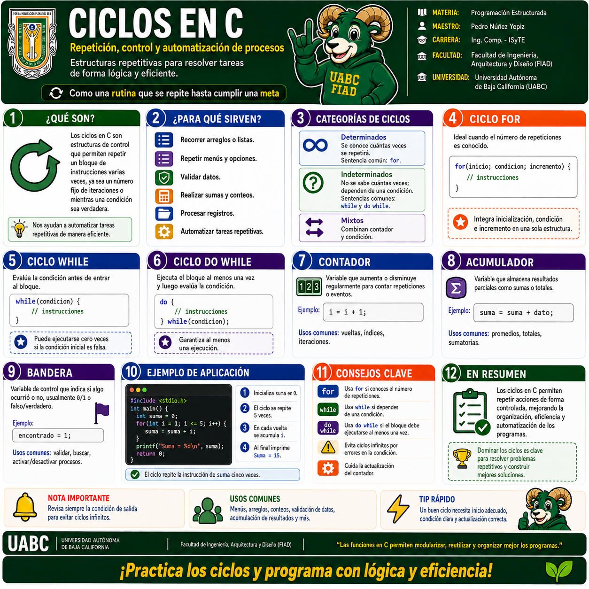
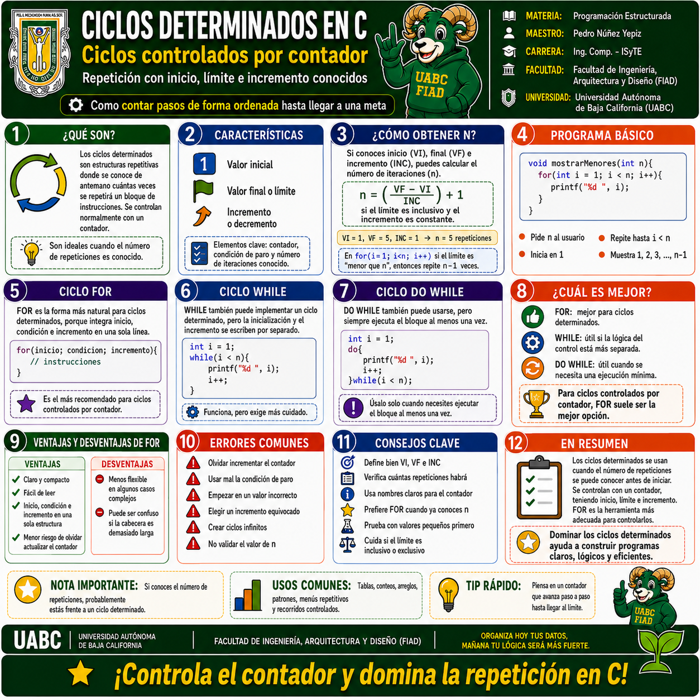
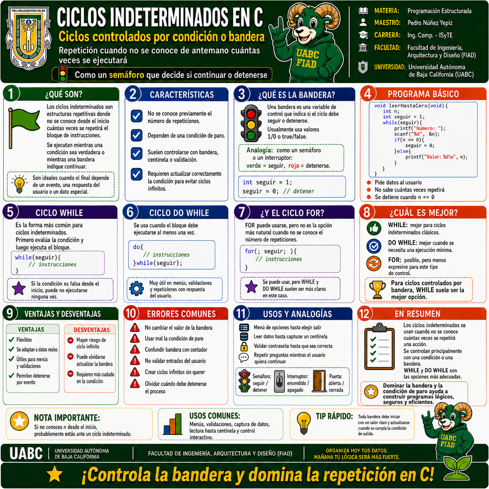
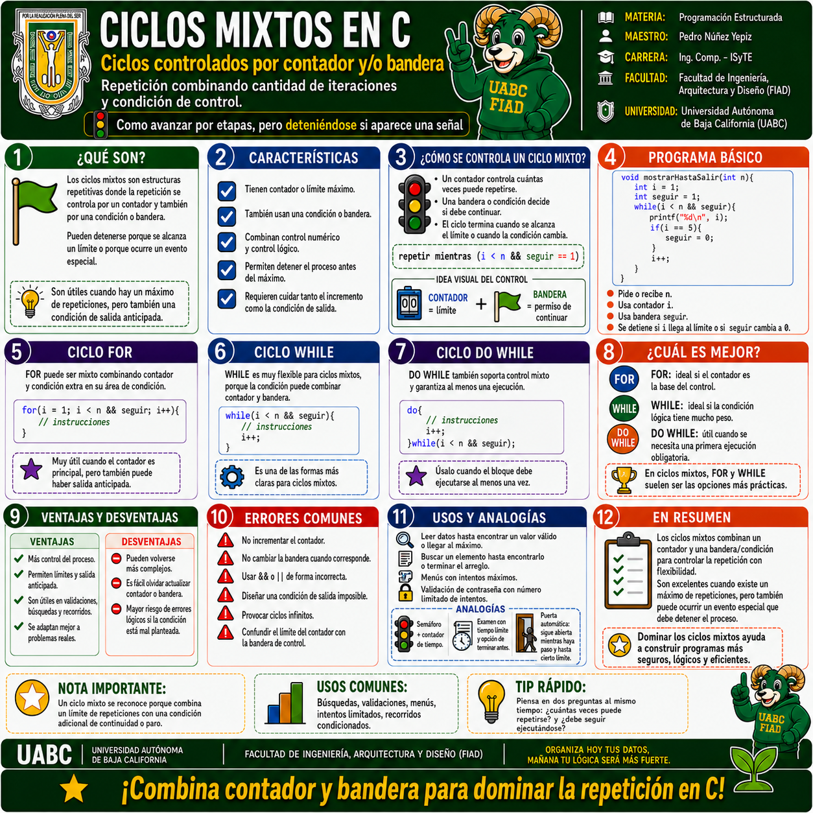

1 · Ciclos en C · Conceptos fundamentales
Introducción general a las estructuras repetitivas: qué son, para qué sirven, tipos de ciclos, FOR, WHILE, DO WHILE, contador, acumulador, bandera, ejemplos de aplicación y recomendaciones.
Selecciona cualquier infografía para abrirla a pantalla completa. En la vista ampliada puedes usar Zoom +, Zoom −, las flechas anterior/siguiente o la tecla Esc para cerrar.

Introducción general a las estructuras repetitivas: qué son, para qué sirven, tipos de ciclos, FOR, WHILE, DO WHILE, contador, acumulador, bandera, ejemplos de aplicación y recomendaciones.

Ciclos controlados por contador. Incluye valor inicial, valor final, incremento, cálculo del número de repeticiones, FOR, WHILE, DO WHILE, ventajas, errores comunes y ejemplos.

Ciclos controlados por condición o bandera. Explica el concepto de bandera, la analogía del semáforo, WHILE, DO WHILE, usos comunes, ventajas, desventajas y errores frecuentes.

Combinación de contador y bandera o condición. Presenta el control mixto, ejemplos con FOR, WHILE y DO WHILE, analogías, ventajas, desventajas y aplicaciones prácticas.